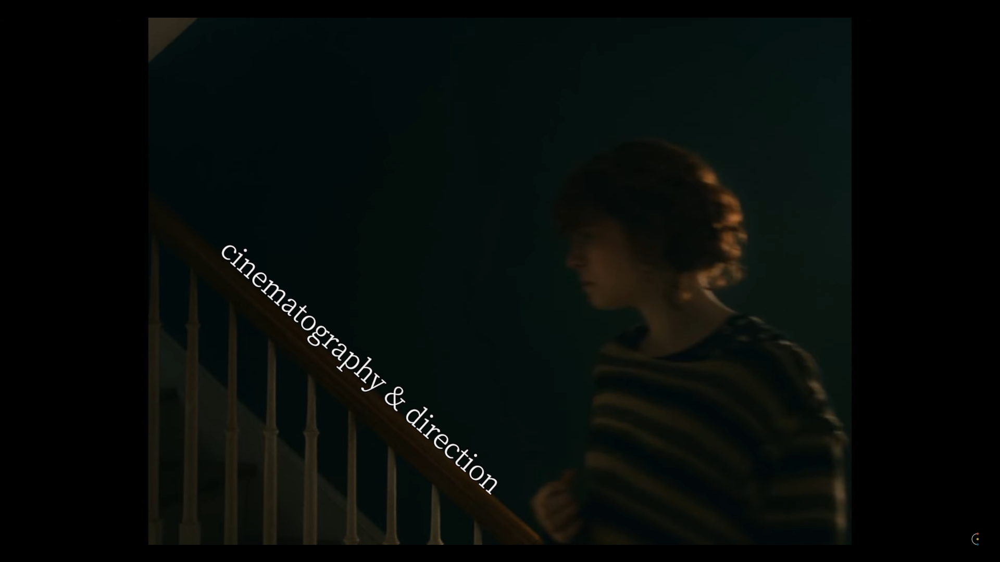
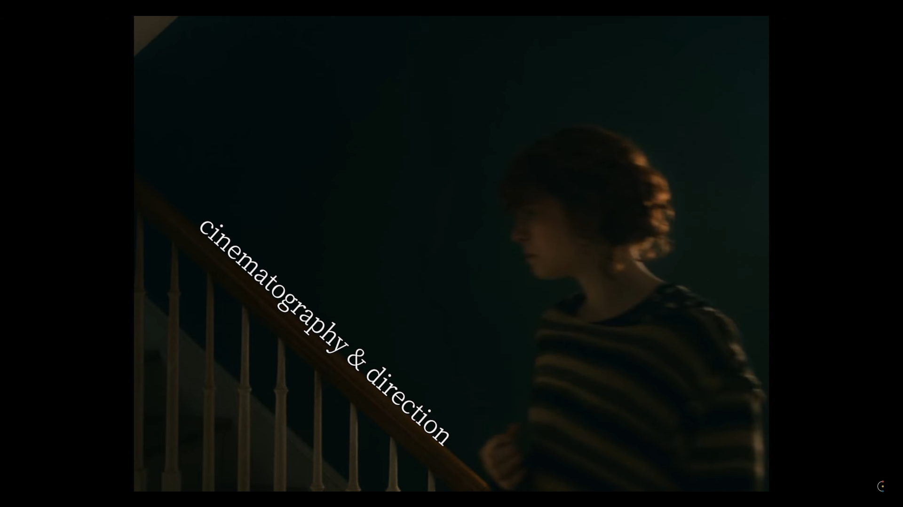

I'm Thinking of Ending Things
2022.09.04
Introduction
Synopsis and Stills
I'm Thinking of Ending Things, Charlie Kaufman's latest directorial outing, continues his obsession for the surreal and existential. Full of misgivings, a young woman travels with her new boyfriend to his parents' secluded farm. Upon arriving, she comes to question everything she thought she knew about him, and herself. This retrospective covers the film's narrative, themes, and technical elements.


 
